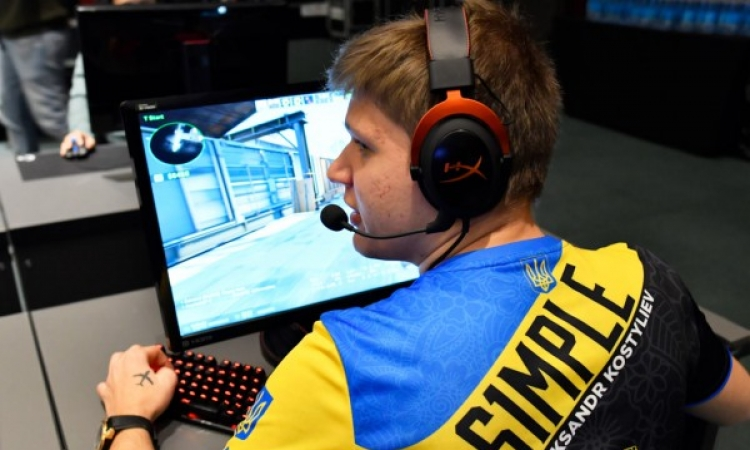

Якщо в любителя кіберспорту, який цікавиться дисципліною CS:GO, запитати «хто є
найкращим гравцем в КС з України», то напевне вам назвуть Олександра «s1mple»
Костилєва. Багато хто вважає його найкращим гравцем у світі, а дехто, мабуть, із
заздрости, каже, що він «зовсім не вміє грати в CS». Але те, що він є знаковою та однією з
найвідоміших фігур у світовому кіберспорті, не буде заперечувати ніхто.

Народився Олександр Олегович 2 жовтня 1997 року в місті Київ. Захоплюватися
комп’ютерними іграми почав змалечку. Як розповідала мама Саші, «він був активним
хлопчиком і боровся зі старшим братом за комп’ютер». Саме старший брат Олексій
ознайомив чотирирічного Костилєва з грою Counter-Strike (тоді це була версія 1.6), яка
викликала чималий інтерес у хлопця. У школі вчився добре, тому батьки не були проти
захоплення відеоіграми.

У вересні 2014 року починається справжня кар’єра гравця про-рівня – Костилєв підписав
контракт із командою HellRaisers. Приблизно за пів року s1mple розпрощався з HR і
перейшов у команду dAT Team, а ще за місяць став гравцем FlipSid3 Tactics. За деякий
час через внутрішні конфлікти він залишив команду й оголосив про паузу в кар’єрі. Але
вона тривала недовго, і незабаром Саша долучився до колективу Evolution, за який грав
близько місяця.